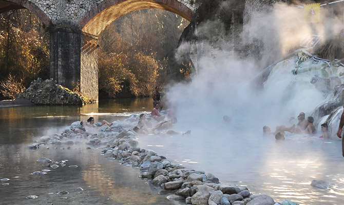

Dintorni
Zona di congiunzione e di confluenza tra la Maremma e il Parco naturale della Val D’orcia, il Monte Amiata è un antico vulcano (1774mlm) nel cui sottosuolo si trovano acque termali, sulla cui vetta è possibile sciare e alle cui pendici si arriva nei pressi del mare. Le piste da sci sono raggiungibili in dieci minuti di macchina. Lo sci invernale può contare su svariati Km di piste attrezzate con seggiovie e impianti di risalita.
Natura e Borghi
Moltissimi gli itinerari per visitare e apprezzare i dintorni: dai bagni nei fiumi montani alle terme libere nei boschi o ai paesi con vocazione termale dove potersi rigenerare. E poi passeggiate al fresco sulla Vetta dell’Amiata o nei 300 Km di sentieri che attraversano sia il versante senese che quello grossetano, in un territorio particolarmente ricco in biodiversità. E ancora nel Parco Faunistico e sul Monte Labbro, cuore stesso del Parco, con la sua vista mozzafiato che spazia sino all’Argentario e alla costa D’Argento, raggiungibili, a loro volta, con gite in giornata, per un tuffo nel mare.
Inoltre da visitare assolutamente la zona di Pitigliano, Sorano, Sovana, per godersi poi un bagno a Saturnia. Senza tralasciare Montalcino, mecca del Brunello, l‘Abbazia di San Antimo, Pienza, Monticchiello e Montepulciano, siti nella universalmente famosa e acclamata Val D’Orcia.
Un po piu lontano rispetto all’Amiata, L’Abbazia Cistercense di San Galgano offre uno scenario particolarmente suggestivo per l'assenza della copertura, crollata nel XV secolo, e per la sua “Spada nella Roccia”, elementi che sicuramente ne giustificano la visita
Decine i paesi medioevali, iniziando da Santa Fiora, che, come il loro paesaggio circostante, mantengono il loro fascino antico ed originario. Architetture salvate dal tempo come solo in Toscana accade.

Terme e Fiumi
Il Monte Amiata e’ un antico vulcano, inattivo da millenni, ma al cui interno bacini di acqua calda alimentano svariate località termali.
A poca distanza dalla casa si trovano le terme di San Filippo e la sua famosa “Balena Bianca”, sorgente immersa in boschi rigogliosi, con spettacolari formazioni calcaree, e con svariate vasche naturali di acque calde.
Poco oltre Bagni Vignone con la bellissima piazza centrale al cui centro una grande vasca termale , famosa anche per il film Nostalghia realizzato qui da Tarkovsky . Qui troverete tre strutture termali e una cascata libera per l’estate.
E poi San Casciano dei Bagni con le sue terme terme libere e a pagamento
In direzione di Siena ecco Petriolo con la sua acqua miracolosa e il fiume Farma, incontaminato e dalle anse ove nuotare in luoghi ameni.
Infine Saturnia che non ha bisogno di presentazioni, con l’imponente cascata in un contesto suggestivo. Dalla fama internazionale.
Diversi infine i luoghi dove poter fare il bagno nei fiumi: dal fiume Zancona al Vivo al Farma
Non dimenticate il costume!
Luoghi Sacri
Il Monte Amiata è da sempre un crocevia di intensa attività spirituale, grazie alle sue Pievi e alla Via Franchigena che la accosta a nord, alle basiliche o alle chiese di origine Longobarda. La Cripta dell’Abbazia di Abadia San Salvatore ne e’ un esempio straordinario. Come anche la Pieve di Contignano, a Pienza, con la sua torre cilindrica e i bassorilievi enigmatici. E’ situata presso i campi resi famosi dalle scene li girate per il film Il Gladiatore
prima ancora gli Etruschi ne scolpiscono i territori lasciando tracce della loro presenza in luoghi come Roselle, all’interno dell’area archeologica Etrusco-Romana, o con la necropoli di Sovana, il Parco Etrusco di Sorano, ed infine con lo straordinario ritrovamento del Santuario Termale di San Casciano Dei Bagni, dove sono riemerse statue etrusche e manufatti votivi romani perfettamente conservati. A documento anche della interazione sociale e spirituale tra le due popolazioni.
Nei primi del Novecento ha visto sorgere la comunità socialista e cristiana di David Lazzaretti sul Monte Labro; attualmente vi risiede Merigar, sede della Comunità Dzogchen, uno dei maggiori centri di buddhismo tibetano in Italia, i cui monumenti e le sue attività attirano ogni anno turisti da tutto il mondo. Sulla strada per Montalcino troviamo l’Abbazia di San Antimo, spettacolare nel sua architettura e con la sua posizione
Città d’Arte
Nel territorio comunale, a pochi minuti dalla nostra struttura, sorge Il Giardino di Spoerri, parco museo di arte contemporanea creato da Daniel Spoerri. È una bellissima tenuta di circa 16 ettari di in cui 115 installazioni sono disseminate per l'intero parco tra ulivi e boschetti, corsi d’acqua e paesaggi incantevoli.
Convertito a polo museale il Castello Aldobrandesco di Arcidosso, e’ uno dei castelli medievali più antichi d’Italia e d’Europa (sec. X – XIV). Ospita al suo interno i musei di David Lazzaretti, eremita e predicatore dell’Amiata, e il MACO. Quest’ultimo museo di Arte e Cultura Orientale conserva opere d’arte, oggetti di artigianato e di costume, relativi alla cultura himalayana ed è il risultato della collaborazione tra il Comune di Arcidosso e la Comunità Dzogchen di Merigar
Piccoli ma ricchi di storia e arte i musei Diocesani di Pienza e Montalcino, che ospitano pale e dipinti della scuola Senese del due trecento mentre a Buonconvento l’Abbazia di Monte Oliveto conserva, tra le altre cose, un ciclo di affreschi di Luca Signorelli. E sparsi nelle chiese di diversi paesi le famose ceramiche dei Della Robbia
Da S. Fiora ed Arcidosso a Monticchiello e Montepulciano è un susseguirsi di paesi medioevali e città rinascimentali. Innumerevoli gli appuntamenti in qualsiasi stagione